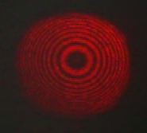

Interference of light beams
On the screen (green) there are bright points (red) where there is constructive interference. In between two bright zones there is a dark zone with destructive interference.
Since each beam is a cone, the red fringes on the screen are actually concentric circles, as shown on the following image, taken from a real interferometer.
The radii of the circles will depend on the wave length and on the distance to the screen. The position of the first circle depends on the ratio between the distance and the wavelength.
If the distance between the sources was a integer multiple of the wavelength, the brightest point would be at the center of the interference pattern. If that distance was a half-integer times the wavelength, the center of the pattern would be completely dark.
If the two sources were moving apart from each other, it will appear as if there were circles coming out of the center of the interference pattern. Each circle that goes out would correspond to a displacement of a wavelength.